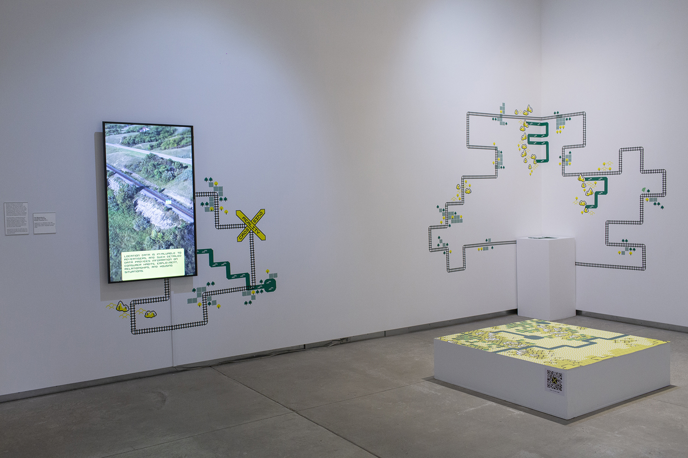
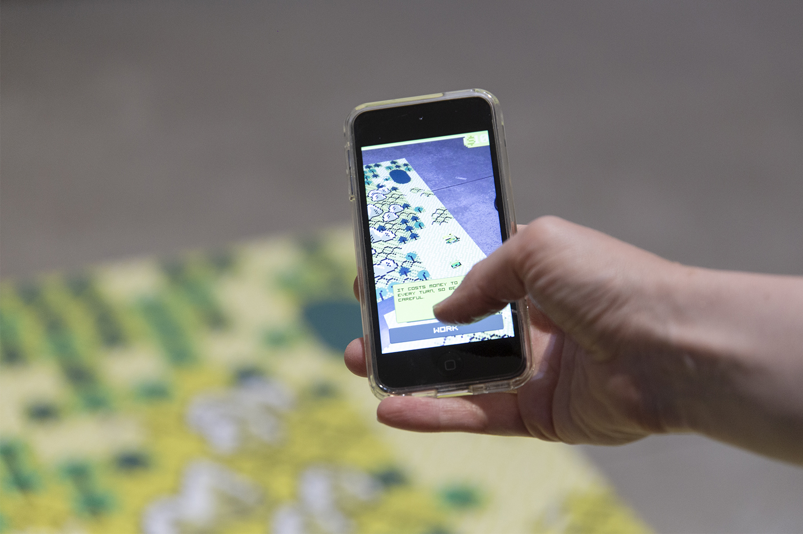
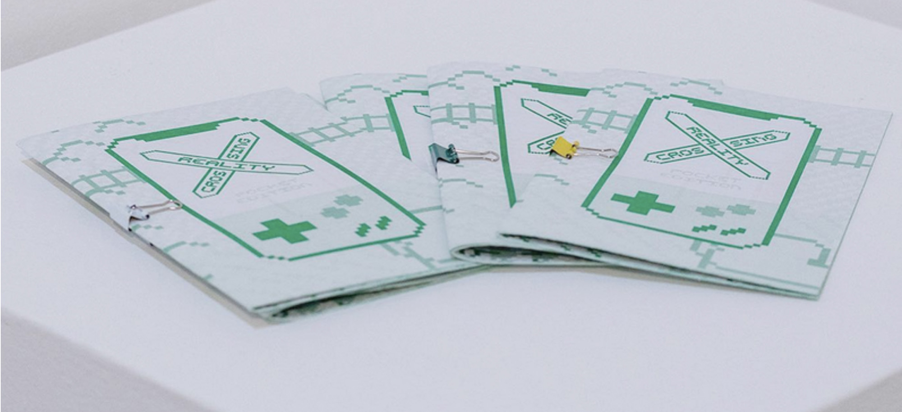

Reality Crossing

Reality Crossing is an interactive AR simulation of railway and real estate development. The project compares the technologies of augmented reality and the railway, exploring how each enabled new resources to be extracted from the land and changed the public's perception of space and time. Learning from our past, the artists ask us to consider how we might develop present and future digital infrastructure that prioritize and empower people.

